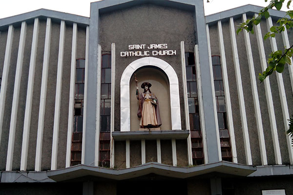
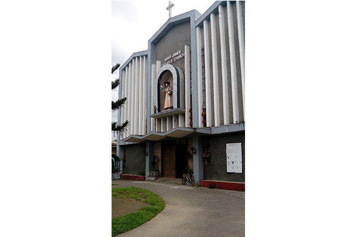
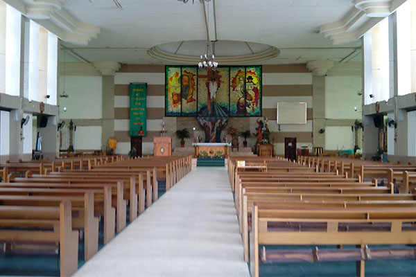
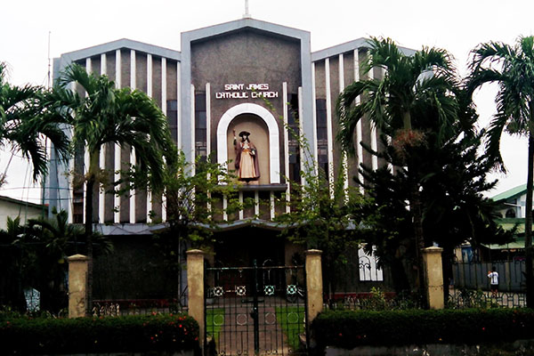

Back
Saint James Parish Church
You can swipe the images




Location: Asinan Poblacion, Subic, Zambales 2209
Contact Information:
Telephone: (047) 232-2310
Mass Schedule:
Mon-Tues-Thurs-Fri-Sat (6:00am)
Wed (5:00pm)
Sunday - 1st Mass (6:30 am)
2nd Mass (8:00 am)
3rd Mass (5:00 pm)
 |
|---|